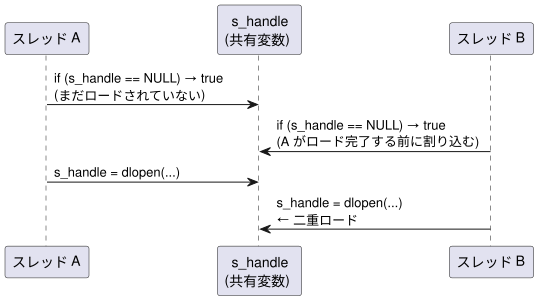

func.c の useOverride != 0 パスでは、初回呼び出し時のみ以下を実行します。
dlopen("liboverride.so", RTLD_LAZY) // ① ライブラリのロード / 参照カウント増加
dlsym(handle, "func_override") // ② シンボルテーブル検索2 回目以降は静的変数にキャッシュされたハンドルと関数ポインタをそのまま使用します。
func_override(...) // ③ 本来の処理 (キャッシュ済みポインタを呼び出し)| 操作 | 初回 (コールド) | 2 回目以降 (ウォーム) |
|---|---|---|
dlopen |
大 (ファイル検索・mmap・シンボル解決・コンストラクタ実行) | 中 (前回の dlclose でアンロード済みなら再ロードに近いコスト) |
dlsym |
中 (ハッシュテーブル検索、数 μs 程度) | 同左 |
dlclose |
中 (参照カウント -1、0 になればデストラクタ + アンマップ) | 同左 |
| 関数呼び出し本体 | ns 単位 | ns 単位 |
Linux / Windows ともに dlopen / LoadLibrary は内部で参照カウントを管理しています。dlclose で参照カウントが 0 になると OS はライブラリをアンマップするため、次回の dlopen は冷たいロードに近いコストが再びかかります。キャッシュパターンではこのコストを初回のみに抑えます。
| 呼び出し頻度 | 判断 |
|---|---|
| 起動時や設定変更時など低頻度 | 無視できます |
| Web API のリクエスト単位など中頻度 | 測定して判断してください |
| ループ内・高速処理パスなど高頻度 | 無視できません。dlopen の数 μs ~ 数十 μs が積み重なり支配的になります |
func.c では、libbase_local.h で定義された MODULE_HANDLE 型を使い、ハンドルと関数ポインタをモジュールスコープの変数に保持します。DllMain.c からも参照するため static は付けず、libbase_local.h の extern 宣言で共有します。
/* libbase_local.h の extern 宣言と対応するモジュールスコープ変数 */
MODULE_HANDLE s_handle = NULL; /* Linux: void *, Windows: HMODULE */
func_override_t s_func_override = NULL;s_handle == NULL の単純なチェックでは、複数のスレッドが同時に func() を呼び出したとき競合が発生します。

この競合が引き起こす問題は複数あります。
| 問題 | 内容 |
|---|---|
| 二重ロード | dlopen が 2 回実行され、参照カウントが期待より増加する。onUnload() での dlclose が 1 回では不十分になる |
| 部分書き込みの参照 | スレッド A が s_handle を書き込んでいる途中でスレッド B が読むと、不完全な値を参照する可能性がある (メモリバリアなしでは CPU の書き込み順序が保証されない) |
s_func_override の不整合 |
s_handle の書き込みと s_func_override の書き込みの間に別スレッドが割り込むと、s_handle != NULL なのに s_func_override == NULL という矛盾した状態が見える |
マルチスレッド環境での初回ロードには、OS が提供する 1 回限りの初期化プリミティブを使用します。
| プラットフォーム | プリミティブ | ヘッダー / ライブラリ |
|---|---|---|
| Linux | pthread_once_t / pthread_once() |
<pthread.h> / -lpthread |
| Windows | INIT_ONCE / InitOnceExecuteOnce() |
<windows.h> (追加リンク不要) |
これらのプリミティブは内部でメモリバリアを含む排他制御を提供するため、二重チェックロック (double-checked locking) を自前実装する必要がありません。
/* 一回限りの初期化制御変数 (func.c 内のみ、DllMain.c との共有不要) */
#ifndef _WIN32
static pthread_once_t s_once = PTHREAD_ONCE_INIT;
static void load_liboverride_once(void)
{
s_handle = dlopen("liboverride.so", RTLD_LAZY);
if (s_handle == NULL) { return; }
s_func_override = (func_override_t)dlsym(s_handle, "func_override");
if (s_func_override == NULL) { dlclose(s_handle); s_handle = NULL; }
}
#else /* _WIN32 */
static INIT_ONCE s_once = INIT_ONCE_STATIC_INIT;
static BOOL CALLBACK load_liboverride_once(PINIT_ONCE pOnce, PVOID param, PVOID *ctx)
{
(void)pOnce; (void)param; (void)ctx;
s_handle = LoadLibrary("liboverride.dll");
if (s_handle == NULL) { return TRUE; }
s_func_override = (func_override_t)GetProcAddress(s_handle, "func_override");
if (s_func_override == NULL) { FreeLibrary(s_handle); s_handle = NULL; }
return TRUE;
}
#endif /* _WIN32 */func() 内での呼び出し部分は以下のようになります。
#ifndef _WIN32
if (pthread_once(&s_once, load_liboverride_once) != 0) { return -1; }
#else /* _WIN32 */
if (!InitOnceExecuteOnce(&s_once, load_liboverride_once, NULL, NULL)) { return -1; }
#endif /* _WIN32 */
if (s_func_override == NULL) { return -1; } /* ロード失敗時 */
return s_func_override(useOverride, a, b, result);pthread_once / InitOnceExecuteOnce (コールバックが TRUE を返す場合) はいずれも「一度実行したら以降はスキップ」という意味論を持ちます。dlopen / LoadLibrary が失敗した場合でも初期化済みとみなされ、以降の呼び出しではロードを再試行しません。s_func_override == NULL チェックにより、失敗時は常に -1 を返します。
再試行が必要な場合は pthread_mutex_t / SRWLOCK を使った明示的なロックパターンに切り替えてください。
s_once のリセットについてs_once は func.c 内の static 変数です。onUnload() でリセットする必要はありません。
static 変数のデータは共有ライブラリのデータセクション (.data) に配置され、プロセス単位でマッピングされます。同じ共有ライブラリを複数のスレッドから参照しても、プロセスに対して同一のデータセクションが使われます。dlopen / LoadLibrary が同じライブラリを複数回呼び出した場合も、OS はプロセス内で同一のマッピングを再利用するため、s_once の状態はプロセス全体で一貫して保たれます。
base.so / base.dll がアンロードされると (dlclose で参照カウントが 0 になる、またはプロセス終了)、OS はそのプロセスに対するデータセクションのマッピングを破棄します。その後、同じプロセス内で再ロードされた場合はデータセクションが新たにマッピングされ、s_once は初期値 (PTHREAD_ONCE_INIT / INIT_ONCE_STATIC_INIT) に戻ります。
複数のプロセスが同じ base.so / base.dll を同時にロードしていても問題はありません。共有ライブラリのコードセクション (.text) は物理メモリ上の同一ページを複数プロセスで読み取り専用共有しますが、データセクション (.data / .bss) は各プロセスが独立したプライベートマッピングを持ちます (Linux: CoW、Windows: 各プロセス固有のページ)。したがって s_once・s_handle・s_func_override はプロセスごとに完全に独立しており、あるプロセスの状態が別プロセスに影響することはありません。
したがって s_once の状態は常に「そのプロセスにおける base.so / base.dll のマッピングライフタイム」と一致し、onUnload() で明示的にリセットしなくても整合性が保たれます。
s_handle に保持したハンドルは、base.so / base.dll がアンロードされるタイミングで自動的に解放されます。
アンロード処理は DllMain.c に分離しており、func.c との変数共有には libbase_local.h を使用しています。
onUnload() (DllMain.c)Linux / Windows 共通のクリーンアップ処理を onUnload() にまとめています。Linux / Windows それぞれのエントリーポイントからこの関数を呼び出します。
static void onUnload(void)
{
LOG_INFO_MSG("base: onUnload called");
if (s_handle != NULL)
{
#ifndef _WIN32
dlclose(s_handle);
#else /* _WIN32 */
FreeLibrary(s_handle);
#endif /* _WIN32 */
s_handle = NULL;
s_func_override = NULL;
}
}LOG_INFO_MSG は DLL アンロードコンテキストの API 制約に合わせたログ出力マクロです。Linux では syslog()、Windows では OutputDebugStringA() を使用します。
__attribute__((destructor)) (DllMain.c)__attribute__((destructor)) static void unload_liboverride(void)
{
onUnload();
}__attribute__((destructor)) を付与した関数は、以下のタイミングで呼ばれます。
| トリガー | 呼び出しタイミング |
|---|---|
dlclose(base.so) で参照カウントが 0 になったとき |
ライブラリのアンロード直前 |
プロセス正常終了 (return / exit()) |
atexit コールバックの後、OS へ制御が返る前 |
_exit() / abort() による強制終了 |
呼ばれない |
DllMain(DLL_PROCESS_DETACH) (DllMain.c)BOOL WINAPI DllMain(HINSTANCE hinstDLL, DWORD fdwReason, LPVOID lpvReserved)
{
(void)hinstDLL;
(void)lpvReserved;
if (fdwReason == DLL_PROCESS_DETACH)
{
onUnload();
}
return TRUE;
}DLL_PROCESS_DETACH は以下のタイミングで呼ばれます。
| トリガー | 呼び出しタイミング |
|---|---|
FreeLibrary(base.dll) で参照カウントが 0 になったとき |
ライブラリのアンロード直前 |
プロセス正常終了 (return / ExitProcess()) |
Windows ローダーがロード済み DLL を順にアンロードするとき |
TerminateProcess() による強制終了 |
呼ばれない |
注意:
DllMainのDLL_PROCESS_DETACHハンドラ内では、呼び出せる Win32 API が制限されています。FreeLibraryはDLL_PROCESS_DETACHから呼び出し可能ですが、lpvReserved != NULL（プロセス終了による DETACH）の場合はリソースは OS が回収するため、FreeLibraryを省略することもあります。本実装では明示的に解放しています。
キャッシュパターン採用時など、dlclose / FreeLibrary を呼ばずにプロセスを終了した場合の動作です。
結論: OS リソースの観点では問題ありません。ただしライブラリが外部リソースを管理している場合は注意が必要です。
プロセスが exit() で終了すると、glibc の終了処理が以下を順に実行します。
__cxa_atexit() で登録されたコールバック (C++ 静的デストラクタを含む) を呼び出します__cxa_atexit() 経由でコールバックを登録していれば、dlclose なしでも呼び出されます_exit() や abort() による強制終了では glibc の終了処理をスキップするため、登録済みコールバックは呼ばれません。
プロセスが正常終了 (ExitProcess() または main の return) すると、Windows ローダーが全ロード済み DLL の DllMain を DLL_PROCESS_DETACH で呼び出します。FreeLibrary していない DLL も対象になります。
TerminateProcess() による強制終了では DllMain は呼ばれません。
| 終了方法 | Linux デストラクタ | Windows DllMain(DETACH) |
|---|---|---|
正常終了 (return / exit()) |
呼ばれる | 呼ばれる |
_exit() / abort() |
呼ばれない | 呼ばれない |
TerminateProcess() |
— | 呼ばれない |
OS が回収できない外部リソースをライブラリの終了処理が管理している場合に影響が出ます。
| 外部リソースの例 | 影響 |
|---|---|
| ファイル・ソケット | OS がクローズするため問題ありません |
プロセス間共有メモリ (shm_open / CreateFileMapping) |
他プロセスが参照中なら残存する可能性があります |
| 名前付きミューテックス・セマフォ | 解放されずロックしたまま残存する可能性があります |
| 一時ファイル・ロックファイル | 削除されずに残る可能性があります |
| 外部サービスへの接続 (DB など) | コネクションが即時切断されず、サーバ側で残留する可能性があります |
liboverride は乗算のみを行い外部リソースを一切管理していないため、ハンドルを保持したままプロセスを終了しても Linux・Windows ともに問題ありません。アンロード時処理はリソース管理の明示的な例として実装しています。